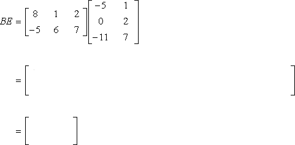

MAT106
Uke 15
09.04.2018
Alexander S. Lundervold
institutt for data- og realfag
På mobil? Swipe
Forrige uke
Lineær algebra
Matriser, vektorer, lineære systemer$$A = \left(\begin{array}{lll} 1&2&3 \\ 4&5&6 \\ 7&8&9 \end{array}\right), \quad \vec{v} = \left(\begin{array}{l} 1 \\ 2 \\ 3 \end{array}\right)$$
De to viktigste verktøyene i lineær algebra:
Matriser
Rektangulære tabeller av tall (eller funksjoner)
Brukes til å representere store mengder data. Kan behandles raskt av datamaskiner.
Kan ofte studere data og funksjoner ved å regne direkte med matriser.
Vektorer
Eksempel på vektorer: hastighet, elektriske og magnetiske krefter (felt, fluks), posisjonen til en robot, og «tilstandsrom-representasjonen til et system».
Kan betraktes som spesielle matriser
Anvendelser
Ingeniørfag, fysikk, elektrostatikk, kvantefysikk, teknologi, maskinlæring og kunstig intelligens, kontrollteori, nettverk, robotikk, spill og spesialeffekter, ...Kjente begrep
Matriser, vektorer, og operasjoner på disse (addisjon, multiplikasjon)
Matrisemultiplikasjon
http://www.guideforschool.com
Løse lineære likningssystem $A \vec{x} = \vec{b}$ med rekkereduksjon (også kalt Gauss-eliminasjon)

Jonathan Mitchell, YouTube
Inverse matriser. Løse likningssystem med inverse matriser.
$A\mathbf{x} = \mathbf{b} \,\,\Longrightarrow \,\,\mathbf{x} = A^{-1} \mathbf{b}$Se her for en repetisjon
Kjente begrep
Span, lineær uavhengighet, litt om basis

Essence of linear algebra, 3Blue1Brown
Oppsummering
Anta $A$ er en kvadratisk $n\times n$-matrise. Følgende er ekvivalent:
- $A$ er inverterbar
- $A$ kan rekkereduseres til enhetsmatrisen $I$
- $A\mathbf{x} = \mathbf{0}$ har nøyaktig én løsning (nemlig $\mathbf{x} = \mathbf{0}$)
- $A\mathbf{x} = \mathbf{b}$ har nøyaktig én løsning (nemlig $\mathbf{x} = A^{-1} \mathbf{b}$)
- Det finnes en matrise $C$ slik at $CA = I$ (nemlig $C = A^{-1}$)
- Søylene i $A$ er lineært uavhengige
- Søylene i $A$ utspenner $\mathbb{R}^n$ (dvs. danner en basis for $\mathbb{R}^n$)
Denne uken
- Hva er determinanten til en matrise?
- Hvordan finner man determinanten?
- Hvorfor er determinanten nyttig?
Lagre dette som mentalt bilde på lineær transformasjon
Matrise ganger vektor:
http://setosa.io/ev/eigenvectors-and-eigenvalues

Printio: den hjelpsomme roboten